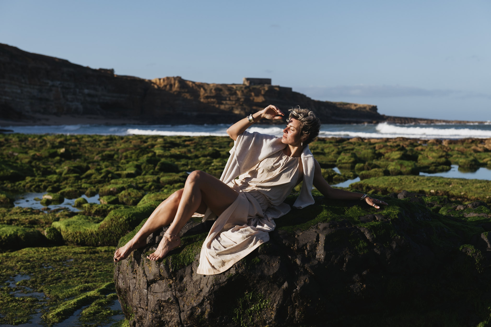
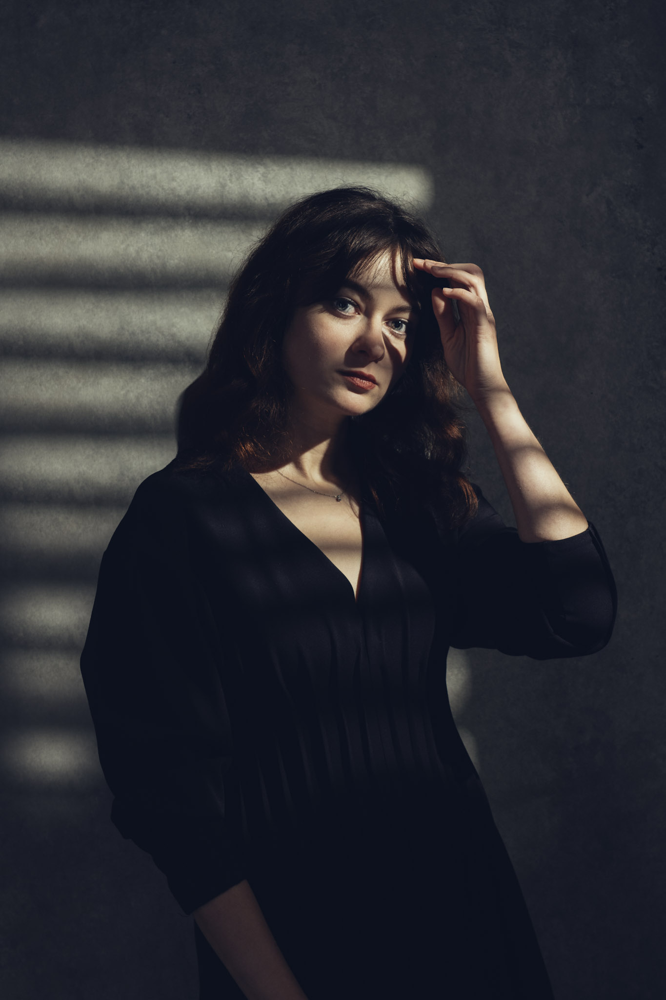
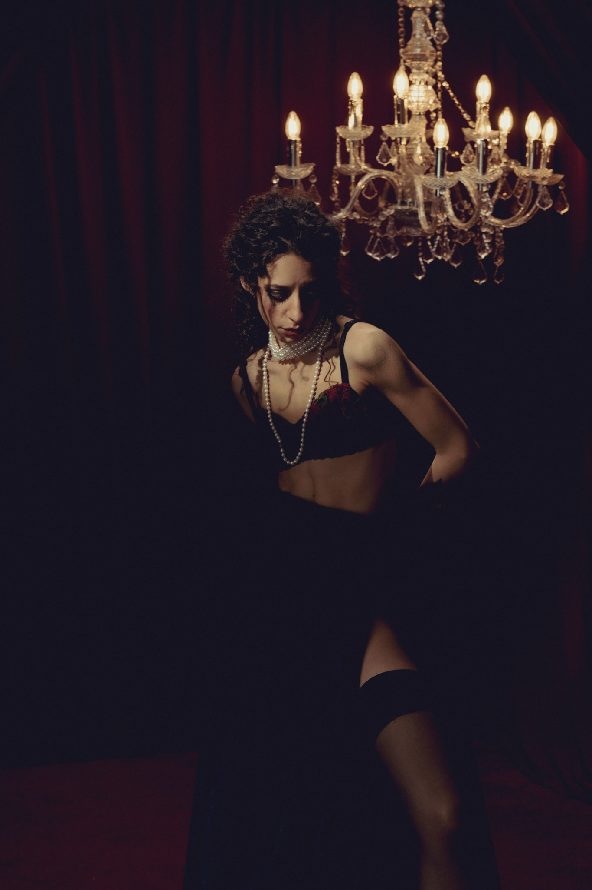
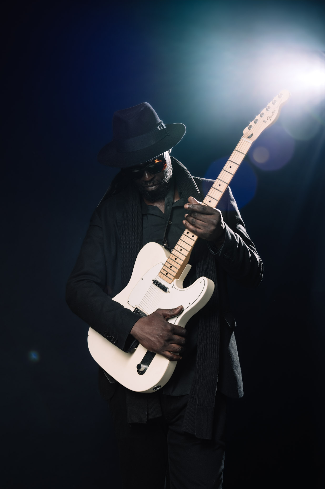

Fashion editorials
Concept-led shoots for designers, stylists, magazines, and independent labels, using cinematic lighting and location or studio direction.

Davide Solla
Cinematic fashion, beauty, and portrait photography shaped with controlled light, colour, and a fine-art sense of story.
Selected editorials

Editorial portraitDreamlandView story



Studio portraitInnaView story



Studio PortraitKihaya BluesView storyPhotography services in London
Concept-led shoots for designers, stylists, magazines, and independent labels, using cinematic lighting and location or studio direction.
Close, polished portrait sessions for creative profiles, press imagery, beauty stories, and campaign-led personal branding.
London portfolio tests built around range, expression, posture, and the editorial versatility agencies and clients need to see.
Atmospheric portrait studies and print-led work for collectors, interiors, curated spaces, and selected creative collaborations.
Fine art
Selected works are available as large-format, gallery-quality prints for private collectors, interiors, and curated spaces.
Enquire about printsCollector prints
Fine-art and editorial studies are available as made-to-order prints, produced by theprintspace through Creativehub with UK-first fulfilment.
About
Davide Solla creates fashion, beauty, and fine-art portraits shaped by controlled light, symbolic styling, and emotional presence. His work sits between editorial polish and cinematic intimacy, with images that feel atmospheric, sculptural, and quietly dramatic.
Available for London studio shoots, location editorials, model portfolio sessions, beauty campaigns, artist portraits, and selected collaborations across the UK and Europe.

Commissions
Share a brief note about the project, timeline, location, styling direction, and the mood you want to create.
Instagram